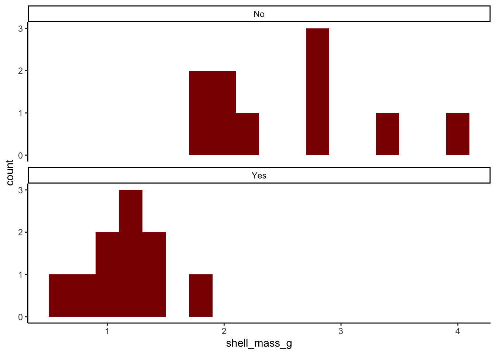
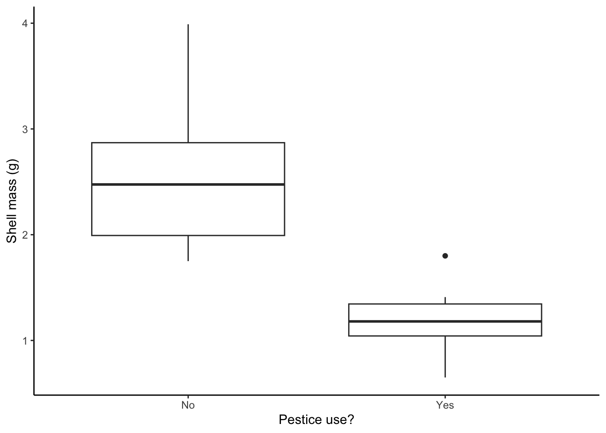
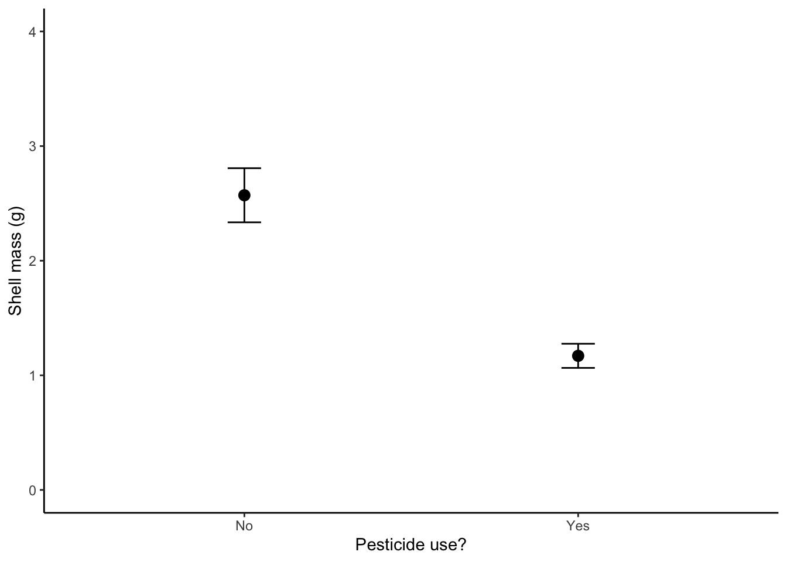
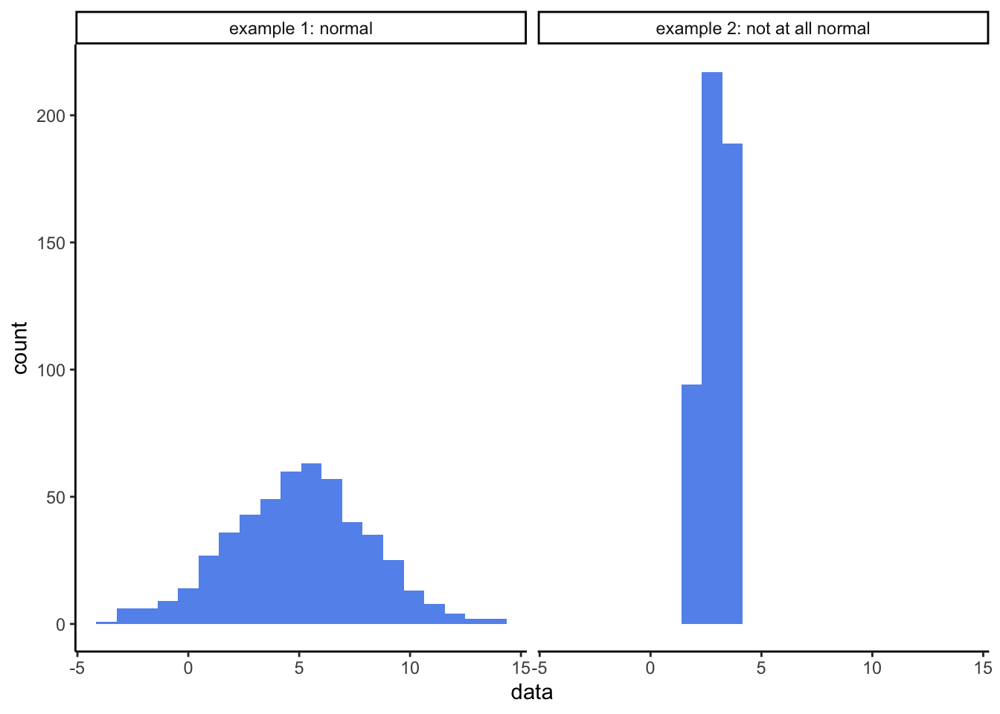
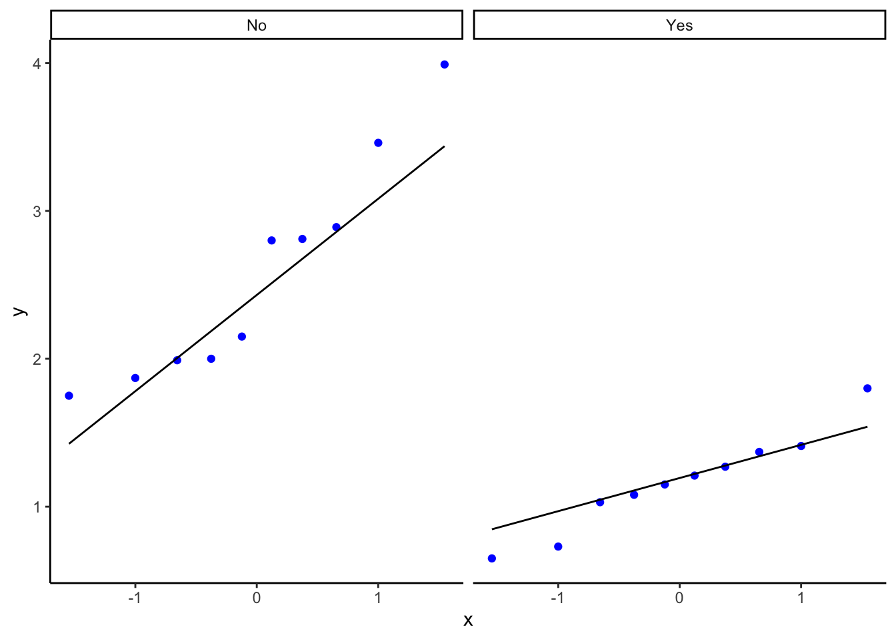

flowchart TD
A{Difference or Trend \nQuestion?} --> B[Trend]
B --> B2{Are you testing for \ndegree of association\nor are you trying \nto make predictions?}
B2 --> B33[Association:\n\nTest for\n correlation coefficient\nPearson or \n Spearman's Rank]
B2 --> B44[Predictions:\n\nSimple linear regression]
A --> C[Difference]
C --> C22{Do you have replicates?}
C22 --> C22Y[Yes]
C22 --> C22N[No]
C22N --> C23{Do you have count data?}
C23 --> C23Y[Yes]
C23 --> C23N[N0]
C23Y --> C24(Chi square test:\nGoodness of fit\nor\nTest of independence)
C23N --> C25[These data cannot be analysed]
C22Y --> D{How many factors?}
D --> F[Two or more]
F --> F2{Independent\nsamples?}
F2 --> F2Y[Yes]
F2 --> F2N[No]
F2Y --> F22Y(n-way ANOVA)
F2N --> F22N(n-way\nrepeated measures\nANOVA)
D --> E[One]
E --> G{How many levels?}
G --> H[Two]
G --> I[More than two]
I --> J{Independent\n samples?}
J --> K[No]
J --> L[Yes]
K --> S(Repeated measures one-way ANOVA\nor\nFriedman Test)
L --> T(One way ANOVA\nor\nKruskal Wallis one-way test)
H --> M{Independent\n samples?}
M --> N[No]
M --> O[Yes]
N --> P(paired t-test\nor\nSigned rank test)
O --> Q(two sample t-test\nor\nMatt Whitney U test)
Tests for difference: two sample t-test
First, use this flowchart to see if a two-sample t-test is appropriate for your question, your study design and your data:
If this chart suggests you need something other than the two sample t-test, you need to go to the descriptions of that test.
In this exercise we find out how to run a two-sample t-test, to determine whether there is evidence to reject the hypothesis that two samples are drawn from the same population.
When to use the two-sample t-test
-
It can be used when we have two independent samples of numerical (not ordinal) response data, and our question is whether the data provide evidence that the samples are drawn from different populations. Even when this criterion is met and the data are numerical and independent, the normality criterion described below still needs to be met. That apart, two common examples where we have two sets of data but we should not use the two sample t-test are:
If the data in your two samples are not independent because you have measured the same individual replicate before and after some event or treatment, then you should probably be using a paired t-test instead. In this you don’t have two samples, each comprising a separate and independent set of replicate. Instead, you have multiple pairs of values, one pair per replicate. The replicates are still assumed to be independent of each other
If your response data are the answers to a Likert scale such as might be used in a survey then they are ordinal in nature and not numerical, and you should probably be using the non-parametric equivalent of the two sample t-test, which is variously known as the Wilcoxon Rank Sum test or as the Mann Whitney U test, or its paired sample version, if appropriate.
It can be used when the data set is small. But not so small that there are no replicates. You do need replicates.
It can still be used when the data set is large.
It assumes that the data are drawn from a normally distributed population. There are various ways to test if this is plausibly the case, and you should try at least one of them, but with small samples, just where the t-test is most useful, it can be difficult to tell. In the end we can also appeal to reason: is there good reason to suppose that the data would or would not be normally distributed?
When comparing the means of two samples, both samples should in principle have the same variance, which is a measure of the spread of the data, so in principle you need to check that this is at least approximately the case, or have reason to suppose that it should be. However, in an actual t-test done using R, the Welch variant of the t-test is carried out by default. This works even when the variances of the two sets are different, so in practice it is possible to ignore this equal variance requirement.
We only use it when we are comparing two samples, one for each of the two levels of a single factor. When we have samples for more than two levels and we use the t-test to look for a difference between any two of them, it becomes increasingly likely, the more pairs of samples we compare, that we will decide that we have found a difference because we got a p-value that was less than some pre-determined threshold (which could be anything, but is most often chosen to be 0.05) even if in reality there is none. This is the problem of high false positive rates arising from multiple pairwise testing and is where ANOVA comes in. t-tests are only used to detect evidence for a difference between two groups, not more. ANOVAs (or their non-parametric equivalent) are used when we are looking for differences between more than two groups.
Motivation and example
In our example we will consider the impact of pesticide use on the masses of shells of garden snails (Cornu aspersum), as measured in gardens around a city, ten from randomly selected gardens that have used a range of pesticides for at least two years and ten that are from randomly selected gardens that have not ever used pesticides. We leave aside here the issue of how those gardens were identified and how randomisation was ensured.
Our question is:
Is there evidence for a difference between snail shell masses in the gardens where pesticides were used compared to those where they were not used?
From which a suitable null hypothesis is:
There is no difference between shell masses in the gardens, whether or not pesticides were used.
and a suitable alternate, two-sided hypothesis is:
There is a difference between shell masses.
The data
Suppose we had our data arranged in a spreadsheet in three columns, one giving the garden ID, G1 to G20, one telling us whether pesticides were used in the garden, yes or no, and one telling us the masses in grams of the snail shells from each garden. Afficioados of R will see that this is ‘tidy’ data. Each variable (ID, pesticide use, shell mass) occurs in only one column, rather than being spread across several. It turns out that this way of storing your data makes it much easier to analyse.
# A tibble: 20 × 3
garden.ID pesticide shell_mass_g
<chr> <chr> <dbl>
1 S1 Yes 1.37
2 S2 Yes 1.15
3 S3 Yes 0.73
4 S4 Yes 0.65
5 S5 Yes 1.03
6 S6 Yes 1.8
7 S7 Yes 1.21
8 S8 Yes 1.41
9 S9 Yes 1.27
10 S10 Yes 1.08
11 S11 No 2
12 S12 No 3.99
13 S13 No 1.99
14 S14 No 1.75
15 S15 No 2.81
16 S16 No 2.15
17 S17 No 1.87
18 S18 No 3.46
19 S19 No 2.8
20 S20 No 2.89- Is the data in the
pesticidecolumn categorical? - If so, how many levels does it have and what are they?
The Process
Step One: Summarise the data
With numerical data spread across more than one level of a categorical variable, we often want summary information such as mean values and standard errors of the mean for each level.
Here we will calculate the number of replicates, the mean and the standard error of the mean for both levels of pesticide ie Yes and No:
# A tibble: 2 × 4
pesticide n mean.mass se.mass
<chr> <int> <dbl> <dbl>
1 No 10 2.57 0.236
2 Yes 10 1.17 0.105From these data, does it look as though there is evidence for a difference between shell masses in the two types of garden? Clearly, the snails in the ten gardens that did not use pesticide had a higher mean shell mass than the ten from gardens that did use pesticide. But is this a fluke? How precisely do we think these sample means reflect the truth about the impact of the use of pesticides? That is what the standard error column tells us. You can think of the standard error as being an estimate of how far our sample means, drawn from just ten gardens of each type are likely to differ from the true shell masses for all gardens that did use pesticides and all gardens that did not.
Bottom line: the difference between the sample means is about ten times the size of the standard errors of each. It really does look as though snails shells in gardens where pesticides are not used are indeed heavier than in gardens where pesticides are used.
Step Two: Plot the data
Remember, before we do any statistical analysis, it is almost always a good idea to plot the data in some way. We can often get a very good idea as to the answer to our research question just from the plots we do.
In Figure 1, we will use ggplot() in R to plot a histogram of ozone levels, one for each side of the city. We will stack the histograms one above the other, all the better to help us spot any differences between east and west.

Instead of histograms, we could have drawn box plots, as in:

or as a dot plot of the means with standard errors of the mean included as error bars, as in Figure 3

Do the data look as though they are inconsistent with the null hypothesis ?
In addition, do the data look as though each group is drawn from a normally distributed population? One of the types of graphs gives you no indication of that while the other two do. Which is the odd one out? Even when looking at the other two figures, when there are so few data it’s kind of hard to tell, no?
Let’s now do some stats.
Step Three: Check the validity of the data - are the data normally distributed?
We can go about establishing this in three ways: using an analytical test of normality, using a graphical method and by thinking about what kind of data we have. Let’s consider these in turn.
Normality test - analytical method
There are several analytical tests one can run on a set of data to determine if it is plausible that it has been drawn from a normally distributed population. One is the Shapiro-Wilk test.
For more information on the Shapiro-Wilk test in R, type ?shapiro.test into the console window. For kicks, try it out on the examples that appear in the help window (which is the bottom right pane, Help tab). One example is testing a sample of data that explicitly is drawn from a normal distribution, the other tests a sample of data that definitely is not. What p-value do you get in each case? How closely do the histograms of each sample resemble a normal distribution?

Shapiro-Wilk normality test
data: example1
W = 0.99817, p-value = 0.8793
Shapiro-Wilk normality test
data: example2
W = 0.94452, p-value = 9.976e-13For the examples above, we see that Shapiro-Wilk test gave a high p-value for the data that we knew were drawn from a normal distribution, and a very low p-value for the data that we knew were not.
The Shapiro-Wilk test tests your data against the null hypothesis that it is drawn from a normally distributed population. It gives a p-value which, as always, is the probably of you having data as far from normality, or further, as yours are if the null hypothesis were true. If the p-value is less than 0.05 then we reject the null hypothesis and cannot suppose our data is drawn froma normally distributed population. In that case we would have to ditch the t-test for a difference, and choose another difference test in its place that could cope with data that was not normally distributed. For a two-sample t-test such as we are hoping to use here, the so-called non-parametric alternative that we could use instead is the Wilcoxon Rank Sum test, often called the Mann-Whitney U test.
Why don’t we do that in the first place, I hear you ask? Why bother with this finicky t-test that requires that we go through the faff of testing the data for normality before we can use it? The answer is that it is more powerful than other, so-called non-parametric tests that can cope with non-normal data. It is more likely than they are to spot a difference if there really is a difference. So if we can use it, that is what we would rather do.
So, onwards, let’s do the Shapiro-Wilk test on our data
We want to test each garden group for normality, so we group the data by location as before and and then summarise, this time asking for the p-value returned by the Shapiro-Wilk test of normality.
# A tibble: 2 × 2
pesticide `Shapiro-Wilk p-value`
<chr> <dbl>
1 No 0.223
2 Yes 0.854For both groups the p-value is more than 0.05, so at the 5% significance level we cannot reject the null hypothesis that the data are normally distributed, so we can go on and use the t-test. Yay!
Graphical methods - the quantile-quantile or QQ plot.
Confession: I don’t normally bother with numerical tests for normality such as Shapiro-Wilk. I usually use a graphical method instead.
We have already seen two ways of plotting the data that might help suggest whether it is plausible that the data are drawn from normally distributed populations. Histograms and box plots both indicate how data is distributed, and for normally distributed data both would be symmetrical. Well, they would be, more or less, if the data set was large enough but for small data sets it can be quite hard to tell from either type of plot whether the data are drawn from a normally distributed population.
A better type of plot for making this judgement call is the quantile-quantile or ‘qq’ plot which basically compares the distribution of your data to that of a normal distribution. If your data are approximately normally distributed then a qq plot will give a straight(-ish) line. Even with small data sets, this is usually easy to spot.

Nothing outrageously non-linear there, so that also suggests we can safely use the t-test.
For an overview of how normally distributed and non-normally distributed data looks when plotted in histograms, box plots and quantile-quantile plots, see this review
The ‘thinking about the data’ normality test
As you might have guessed, this isn’t a test as such, but a suggestion that you think about what kind of data you have: is it likely to be normally distributed within its subgroups or not? If the data are numerical values of some physical quantity that is the result of many independent processes, and if the data are not bounded on either side (say by 0 and 100 as for exam scores) then it is quite likely that that they are. If they are count data, or ordinal data, then it is quite likely that they are not.
This way of thinking may be all you can do when data sets are very small and any of the more robust tests for normality presented here leave you not much the wiser.
Do the actual two-sample t-test
So, it looks as though it is plausible that the data are drawn from normal distributions. That means we can go on to use a parametric test such as a two sample t-test and have confidence in its output.
If we were doing this in R we could use the t.test() function for this (other functions are available!). This needs to be given a formula and a data set as arguments. Look up t.test() in R’s help documentation, and see if you can get the t-test to tell you whether there is a significant difference between ozone levels in the east and in the west of the city.
Welch Two Sample t-test
data: shell_mass_g by pesticide
t = 5.4172, df = 12.442, p-value = 0.0001372
alternative hypothesis: true difference in means between group No and group Yes is not equal to 0
95 percent confidence interval:
0.8397234 1.9622766
sample estimates:
mean in group No mean in group Yes
2.571 1.170 Interpret the output of the t-test.
Study the output of the t-test. Here are some questions to ask yourself.
- What kind of test was carried out?
- A Welch two sample t-test
- What data was used for the test?
- The snail shell mass in g (the output variable) and pesticide use (the explanatory variable)
- What is the test statistic of the data?
- This is t = 5.4172.
- How many degrees of freedom were there? This number is the number of independent pices of information that were used to calculate the final result. It is usually one, two, or three or so less than the number of data points. Don’t overthink it at this stage, especially not the fact that here it is not an integer.
- df = 12.442
- What is the p-value?
- p = 0.0001372. You would most likely report this as p < 0.001
- What does the p value mean?
- It is the likelihood of seeing a difference between sample means as large or larger than the one we found if in fact pesticides made no difference to snail shell mass.
- What is the confidence interval for the difference between shell masses in gardens that use pesticides and in gardens that do not? Does it encompass zero? Remember that the confidence interval gives the range of values within which the true difference between mean shell masses might reasonably lie, given the data. If that range includes zero then the test is telling is that zero is a plausible value for the difference, and hence that we cannot reject the null hypothesis.
- The 95% confidence interval has lower bound 0.8397 and upper bound 1.962. This range does not encompass zero.
- Is there sufficient evidence to reject the null hypothesis?
- Yes. We see this in two way. First the p value is much less than 0.05 and second, the 95% confidence interval does not encompass zero. In a way, the confidence interval is giving us more information than the p-value, since not only can we deduce whether there is evidence for a significant difference, we can also see how big that difference is and how precisely we know it.
- What does the word ‘Welch’ tell you - Google it or look it up in the help for
t.test().- It tells us that a variant of the t-test is being used in which it does not matter if the two. samples have difference variances (spreads).
Other examples where a two sample t-test might be used.
Remember that t-tests in general are used when you have independent samples with multiple replicates drawn from populations corresponding to two levels of some factor (eg north coast, south coast; this beach, that beach; polluted place, clean place etc) and you have measured something numerical, like a length or a mass, temperature or concentration. You still have to do the tests for normality described above, but these are the basic criteria.
Can you think of examples of where you might use a two-sample t-test?
Here are a few suggestions:
Is there a difference between the flight initiation distance of redstarts when confronted by dogs compared to when they are confronted by drones?
Is the nitrate concentration of water in a river below a beaver dam different from the nitrate content above that dam?
Can you think of another example?
What if I can’t use a two sample t-test?
Assuming you have two independent samples, this might be because one or both sets failed the normality criterion, or your data are ordinal. In that case the likely alternative is the non-parametric equivalent of the t-test, variously known as the Wilcoxon Rank Sum test or the Mann Whitney U test.
If your data are in fact sets of paired values, for example because you measured some attribute of the same individuals before and after some treatment, or at two points in time, then you need to use the paired t-test.
If you only have one sample of replicates and want to compare its mean value to a threshold, then you use a one sample t-test. You might do this, for example, if you had collected sediment samples from an estuary, measured the concentration in those samples of some pollutant such as pathogens from sewage, or phosphates from farm runoff, and then wanted to see if the water was compliant with water quality thresholds as dictated by, say, the Water Framework Directive.